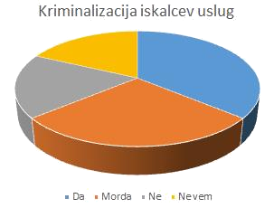

Ali bi podprli zakon, ki bi kriminaliziral iskalce uslug prostituirancev in ne ponudnikov uslug?
a) Da
b) Morda
c) Ne
d) Ne vem
Na to vprašanje je odgovorilo 50 anketirancev.
- Za odgovor: "Da", se je odločilo 18 anketirancev, kar predstavlja 36% vseh anketirancev, ki so odgovorili na to vprašanje.
- Za odgovor: "Morda", se je odločilo 14 anketirancev, kar predstavlja 28% vseh anketirancev, ki so odgovorili na to vprašanje.
- Za odgovor: "Ne", se je odločilo 9 anketirancev, kar predstavlja 18% vseh anketirancev, ki so odgovorila na to vprašanje.
- Za odgovor: "Ne vem", se je odločilo 9 anketirancev, kar predstavlja 18% vseh anketirancev, ki so odgovorili na to vprašanje.
Nazaj